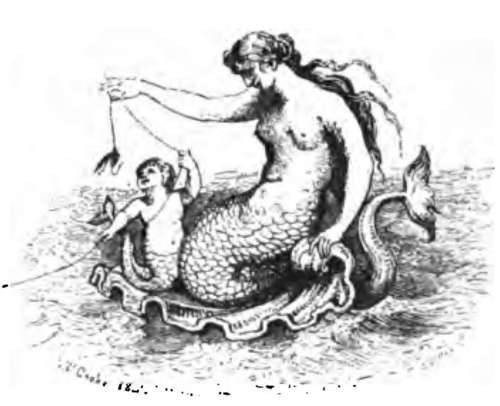
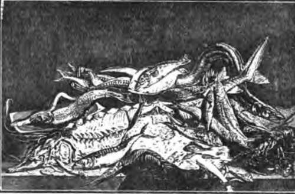

Pollack Fishing. Part 4
Description
This section is from the book "Fishing", by Horace G. Hutchinson. Also available from Amazon: Fishing.
Pollack Fishing. Part 4
I have just used the expression "pollack grounds," from which it will be surmised that this fish has its favourite haunts, and that, in order to catch pollack it is first necessary to find them. The fact is that the greater number of fishes caught from anchored boats must be sought on special grounds of their own, the position of which has from time immemorial been known to the professional fishermen of the locality. The only form of fishing at anchor in which this careful locating of the ground is not strictly necessary is the drift-line fishing for mackerel already described, and even in that there are sometimes favourite grounds. Still, if the fish are fairly plentiful, it is not usual to lose much time in picking up the marks. In fishing for pollack, however, for whiting-pout, for silver whiting, for conger, or in fact for any other fish with fixed haunts, it is not only worth while to put the boat over the ground with extreme accuracy, but it is of little use attempting to fish without doing so. If there were only two hours to fish in, it would be better to spend an hour and three-quarters, if necessary, in finding the exact spot and fishing for the remaining fifteen minutes than to hurry the man in anchoring and devoting most of the time to fishing on a chance ground. And how, it may fairly be asked by any one new to the work, how can one find with any certainty the exact position of a small reef or rocks lying at the bottom of a hundred and fifty feet of water, and situated five or ten miles from the coast ? Well, the operation does not entail any great mystery, consisting only in the taking of careful bearings. The more bearings the amateur takes of any spot, the more accurately will he pick up the desired mark, but the fishermen often make shift with two. And what are these bearings? Why, simply imaginary lines drawn from the spot where the fish are to different points on the shore, and there prolonged so as to get one or more familiar objects in line. The principle is easily illustrated. If, for instance, any one were sitting in a boat a hundred yards or so to the west of Bournemouth pier and another hundred yards farther out, and if he looked straight ashore, he would see the red steeple of the Presbyterian Church over one of the chimneys of the clubhouse on the sands. If his gaze next fell on the flagstaff on the pier head he would find that it came under a building just beyond the Bath Hotel. Looking westward, he would find that he could just see a dark patch of gorse on the farther side of the first chine. And it goes without saying that if, storing these positions in his memory, he were to anchor his boat the next day in such a position that these points again coincided, then the boat would be over precisely the same spot. This is a simple case, for it presents no difficulty to any one with good eyesight and a fairly retentive memory, and even these gifts of the gods may in a measure be supplemented by a pair of binoculars and a notebook and pencil. When, however, it comes to picking up outside grounds, seen from which the coast is but a hazy line, it takes a professional eye to read off the bearings with accuracy. Anything in the nature of a detached rock standing away from the main line is invaluable in getting bearings, and the Gwingeas Rocks at Gorran, in Cornwall, are utilised in Jocating half-a-dozen different marks wide apart. The greatest exactness of all perhaps is required in anchoring the boat for whiting-pout, or " bibs," as they call them in Cornwall. These bold-biting fish, which may grow to a couple of pounds or rather more in weight-and they are then very different fish from the puny examples caught in thousands from our piers-congregate in gullies in the rocks. Unless the baits are lowered in these gullies, not a "bib" is taken, and as these gullies are mere crevices between two rocks, it will easily be imagined that great accuracy is necessary in mooring the boat exactly over the right spot. Two hooks are generally used in this pout fishing, the baits being pieces of mackerel or pilchard, and the fish are struck the moment they bite. The bite is conveyed to the fisherman as a wriggling movement lasting about two seconds, and during the two seconds he must strike sharply, or the fish and bait will both be gone. Pout are so clever at removing the baits that it is useless to leave the hooks down after missing a bite for each, as they are almost sure to be bare. If fishing with a rod, it is best to hold the rod in the right hand and the line between the thumb and forefinger of the left and, on feeling a bite, to pull about a foot of line smartly back through the rings. With a hand-line, hold the line inside the boat and, when the bite comes, pull it smartly down across the gunwale or edge of the boat. Merely jerking the rod top on the one hand, as you would strike a roach, or, on the other, hanging your hand out over the boat and pulling the line upwards, would not be sufficient if pout were biting delicately in deep water. As soon as you feel that the fish is hooked-on good days pout come up two at a time almost as often as one- haul in and do not pause for an instant till the pout is safely in the boat. A moment of slackness, and it will go to a certainty. You will generally catch, along with pout, at any rate on the deep-water grounds, a sprinkling of another fish not unlike them, but distinguished by their bulging eyes, which seem to be enveloped in a crystalline transparent viscous covering. These are poor cod or power cod, and they are the babies of the cod family, being smaller in the adult stage than any of their relatives. I cannot say much for them as eating, though they are not bad when quite fresh. Pollack, on the other hand, are said by those who eat them to taste better on the second day. Personally, I would as soon almost eat them on the twentieth as on the first.

Continue to:
- prev: Pollack Fishing. Part 3
- Table of Contents
- next: Chapter XXVIII. Sea-Fishing From Boats: Whiting And Other Fish